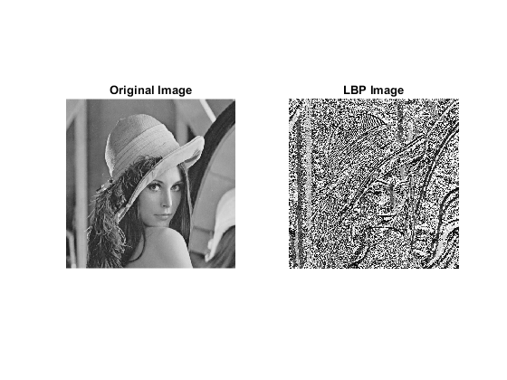

clear all;
close all;
clc;
input_image = imread('lena_color.tiff');
gray_image = rgb2gray(input_image);
[rows, cols] = size(gray_image);
lbp_image = zeros(rows, cols);
neighbors = [
-1 -1; -1 0; -1 1;
0 -1; 0 1;
1 -1; 1 0; 1 1;
];
for i = 2:rows-1
for j = 2:cols-1
center_pixel = gray_image(i, j);
binary_pattern = zeros(1, 8);
for k = 1:8
neighbor_pixel = gray_image(i + neighbors(k, 1), j + neighbors(k, 2));
binary_pattern(k) = neighbor_pixel >= center_pixel;
end
lbp_image(i, j) = sum(binary_pattern .* 2 .^ (7:-1:0));
end
end
figure;
subplot(1, 2, 1);
imshow(gray_image);
title('Original Image');
subplot(1, 2, 2);
imshow(uint8(lbp_image));
title('LBP Image');
